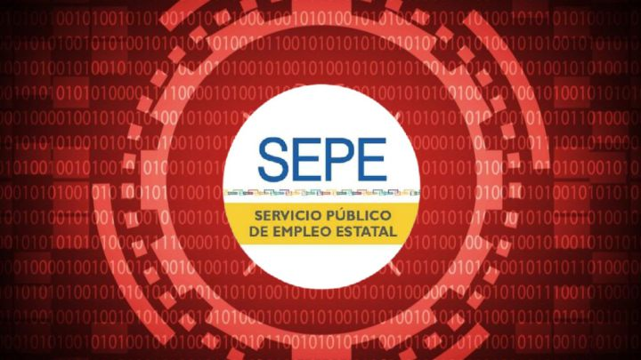

Las Vulnerabilidades más comunes que se pueden sufrir en una página web pueden ser derivadas de la confiabilidad de los datos del lado del cliente que esto sería modificar los datos que proporciona el cliente a la web con la finalidad de posteriormente obtener respuestas de la web.
También debemos tener en cuenta la manipulación de entradas ya que un atacante lo primero que hará será intentar conseguir tener acceso al servidor en el cual se encuentra alojada la web y esto podemos categorizarlo de distintas maneras como:
-Manipulación de URL
-Inyecciones en el encabezado HTML
-Evasión de filtro de detección de intrusos
-Manipular los protocolos
-Buffer Overflow (Cuando sufre un desbordamiento de datos y no es capaz de controlar todos los datos).

Para una mayor seguridad debemos Administrar, monitorear, controlar, manejar los incidentes de seguridad y brindar soporte centralizado.
Para mantener la seguridad en nuestra web ya sea un cms o una web realizada debemos tener en cuenta los siguientes aspectos:
En caso de ser un cms debemos mantener actualizados los plugings
La web debe tener siempre el certificado SSL
Debemos limitar la entrada a la parte de administrador a ser posible que no todo el mundo pueda acceder.
No incluir código js del cual no conozcamos su procedencia ya que alguno puede desviar datos a otros lugares.
Otros de los grandes problemas de las web son las denegaciones de servicio las cuales causan muchos estragos y son difíciles de lidiar con ellas ya que la Ip del servidor es fija y visible
Una de las pocas maneras que hay de lidiar con los DDOS (las denegaciones de servicio) es tener replicada la web en 2 servidores de tal manera que cuando uno de ellos esté siendo atacado el otro servidor pueda continuar dando servicio a la web de tal manera que el usuario nunca vería la web fuera de servicio.
Los 3 tipos de ataques DDOS que tenemos son:
Ataques en la capa de aplicación: Son los ataques más simples e imitan las solicitudes normales al servidor desde el equipo infectado. A medida que el ataque avance, aumenta el volumen de solicitudes aparentemente legítimas y el servidor comienza a colapsar.
Ataques de protocolo: Este ataque se aprovecha del procesamiento de los servidores para sobrecargar y colapsar al objetivo del DDoS.
Ataques volumétricos: En este ataque lo que se ve afectado es el ancho de banda disponible del servidor.
Noticia Actual: El Sepe sufre un ataque informático.
Últimamente han ocurrido Ataques informáticos a Sistemas públicos como en este caso ha podido ser a la web del SEPE (Servicio Público Estatal de Empleo) y también se ha visto afectado su sistema informático completo de tal manera que ni el portal virtual funciona.
Todavía no se tiene con certeza, pero se cree que ha sido un malware de tipo Ransomware, este malware lo que hace es un “Secuestro de archivos” para posteriormente pedir un rescate por ellos. Se cree que el software usado es un software llamado “Ryuk” un software ruso el cual ya fue usado para atacar al ayuntamiento de jerez en octubre de 2019 y realizó grandes estragos en la administración.
Hay varias hipótesis de cómo ha podido entrar al sistema del SEPE, una de ellas es que ha sido a través de phising y a los trabajadores y otra de ellas es que ha entrado por puertos los cuales estaban abiertos y reducían la seguridad.
Ya es el segundo día que el portal virtual y la página web del SEPE no funcionan a causa del ataque sufrido.
Enlace a Noticia periodico ElMundo.
